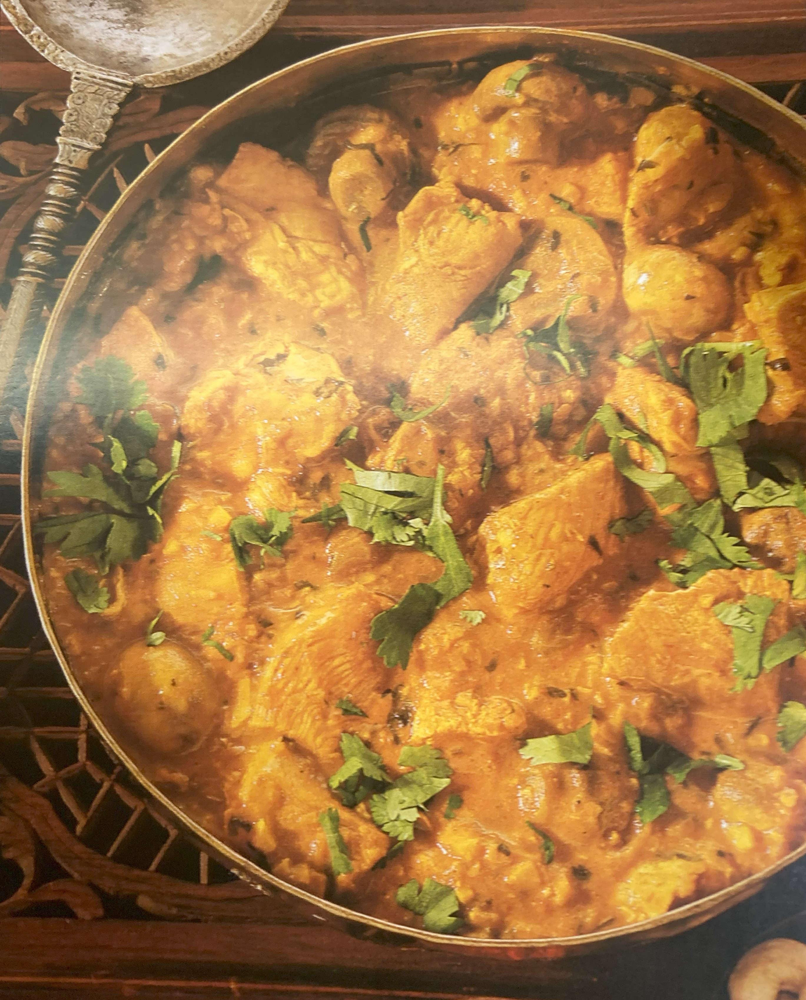

Chicken in Cashew Nut Sauce

Ingredients
Switch to Steps
-
2 Onions
-
2 Tbsp Tomato Paste
-
1/3 cup Cashew Nuts
-
1 1/2 tsp Garam Masala
-
1 tsp Crushed Garlic
-
1 tsp Chilli Powder
-
1 Tbsp Lemon Juice
-
1/4 tsp Ground Turmeric
-
1 tsp Salt
-
1 Tbsp Plain Yogurt
-
2 Tbsp Vegetable Oil
-
1 Tbsp Fresh Cilantro, chopped
-
1 Tbsp Golden Raisins (Sultanas)
-
1 lb Chicken Breast Fillets, skinned and cubed
-
6 oz White Mushrooms
-
1 1/4 cup Water
Steps
Switch to Ingredients
-
Cut the onion into quartersm then place in a food processor or blender.
Process for 1 minute.
-
Add the tomato paste, cashew nuts, garam masala, crushed garlic,
chilli powder, lemon juice, turmeric, salt and yogurt to the onions
and process for a further 1 - 1 1/2 minutes.
-
In a wok or large pan, heat the oil, lower the heat to medium
and pour in the onion and spice mixture.
-
Fry gently, stirring frequently, for about 2 minutes, lowering the heat if necessary.
-
Add the fresh cilantro, sultanas and cubed chicken to the pan
and continue to stir-fry, for a further minute.
-
Add the mushrooms, pour in the measured water and bring to a simmer.
-
Cover the pan and cook over a low heat for about 10 minutes.
-
After this time, check that the chicken is cooked all the way through and the sauce is thick.
Continue to cook for a little longer if necessary.
-
Transfer to a warmed serving dish and garnish with chopped fresh cilantro.